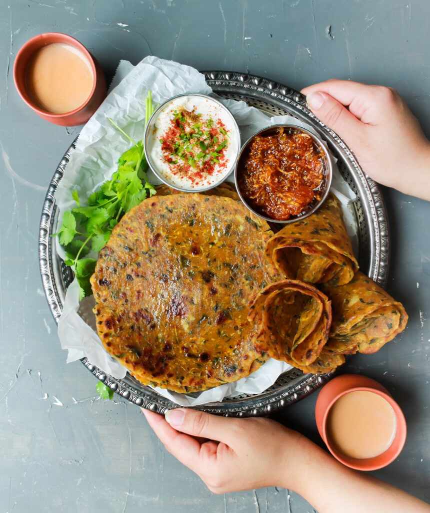
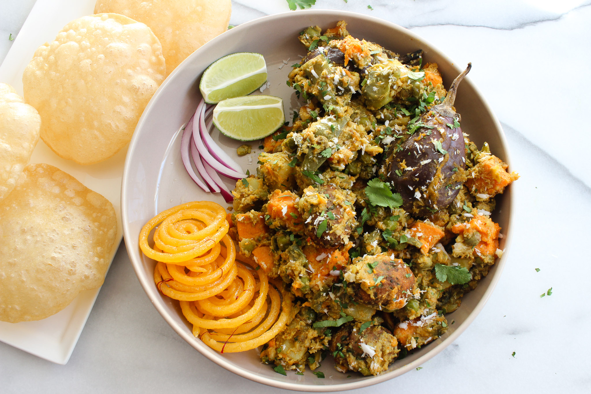

Gujarati Food
Dhokla
Ingredients: Gram flour, Yogurt, Spices.
Recipe: Mix ingredients, steam, and temper with mustard seeds.
Thepla
Ingredients: Whole wheat flour, Spices, Fenugreek leaves.
Recipe: Knead dough, roll, and cook on a griddle.
Undhiyu
Ingredients: Mixed vegetables, Spices, Methi muthia.
Recipe: Cook vegetables with spices and muthia.
Khandvi
Ingredients: Gram flour, Yogurt, Spices.
Recipe: Cook gram flour with yogurt, roll, and temper.
Fafda
Ingredients: Gram flour, Spices.
Recipe: Prepare dough, roll, and fry until crispy.